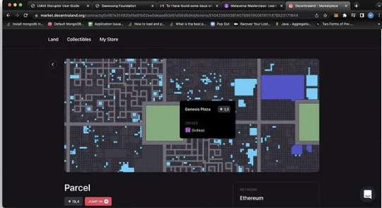
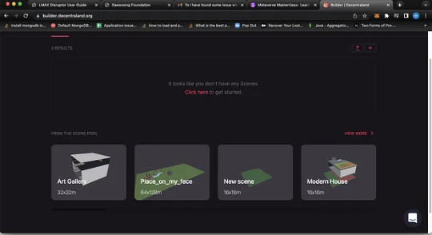
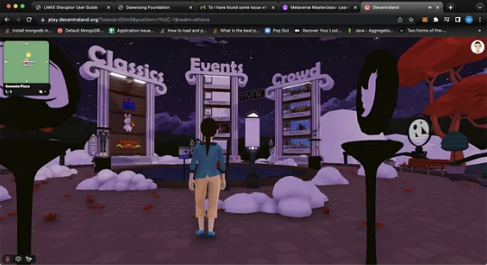

Metaverse ဒေသနာတော်များ အပိုင်း ( ၁ )
https://market.decentraland.org/lands Digital clothes တွေ တင် မဟုတ်တော့ဘူးdigital land တွေပါ လုပ်ပီးရောင်းနေပီ အပေါ် linkမှာကြည့်လို့ရတယ် decentraland မှာရောင်း တဲ့ NFT land plot တခုဆို ဒေါ်လာတသောင်းကျော်က အနည်းဆုံးက စတယ် အဲဒါ တွေ က ဘာလုပ် လို့ရလို့ အဲလောက် စျေးကြီး တာလဲလို့မေးရင် နှစ်ချက်ရှိတယ်သူကနေ ပြန်ရနိုင်တဲ့ အကျိုးအမြတ်ကကြီးတယ် အခု microsoft နဲ့ facebook ကအပြိုင်လုပ်နေတဲ့ metaverse ကြီးသာ ပေါ်လာလို့ metaverse ထဲမှာမြေပိုင်ချင်ရင် အဲမြေကိုဝယ်မှသာရတယိ အမယိ ပီးရင် ပြန်ငှါးလို့လဲ ရတယိ ငှါးလို့ရတဲ့ မြေကို usdt or usdcတို့လို stable coinတွေနဲ့ လက်ခံပီးရင် exchange တွေကနေ ဒေါ်လာပြန်ပြောင်း နည်းနည်းတော့စိတ်ကူးယဉ် ဆန်သလို တော့ရှိပေမယ့်ဖြစ်မလာဘူးလို့လဲပြောမရ bitcoin တုန်းကလဲ ဘာမှတန်ဖိုးမရှိသလောက်ကနေ ဒေါ်လာသောင်းချိီတန်သွားတာဘဲလေ သူ့ကို အဖိုးတန်စေတဲ့ နောက်တချက် ရှားပါးမှုဘဲ အခုလောလောဆယ်ထိ decentralandမှာ မြေကွက် plotပေါင်း ၉၀၀၀ကျော်ဘဲ ရှိတယ် ထပ်ပီး create လုပ်ချင်ရင် ဒီတိုင်း လုပ်လို့မရဘူး DAOလိူ့ခေါ်တဲ့ Decentralized autonomous organization လို့ခေါ်တဲ့ community ထဲမှာ ရှိတဲ့လူတိုင်းက vote ပေးမှဘဲ အသစ်ထပ်လုပ်လို့ရမယ် သူများတွေ ဆီမှာ digital land တွေ digital fashionတွေနဲ့ နောင်ပေါ်လာတော့မယ် metaverse ထဲမှာစျေးရောင်းဖို့ပြင်ဆငိနေကြပီ ပုံ ၁ ကတော့ NFT land plot တွေ
  